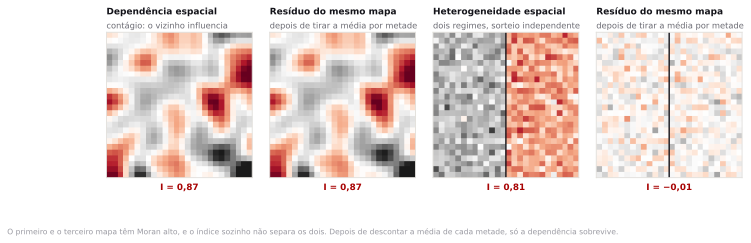
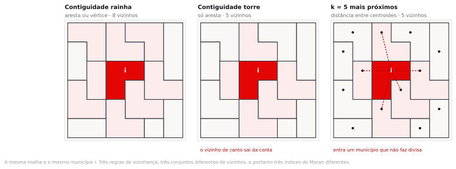
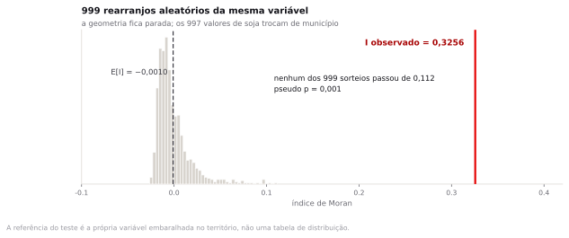

Preparação e dados
Esta é a unidade mais densa do semestre. A leitura preparatória sobre autocorrelação espacial não é opcional: quem chega sem ela vai passar a primeira meia hora tentando entender o que é uma matriz de pesos, e a segunda tentando alcançar a turma.
python3 dados/baixar_dados_reais.py --semana 6- municipios_matopiba_soja_2023.gpkg 997 municípios de MA, TO, PI e BA, polígono, EPSG:4674. Malha oficial de 2022 com a área plantada de soja da PAM 2023 (oficial
soja_ha), área em Albers epct_sojajá calculados. É o ponto de chegada dos passos 1 e 2, pronto para conferência. - sidra_pam_soja_2023.csv Área plantada, área colhida, produção e rendimento de soja em 2023 nos 997 municípios das quatro UFs. CSV UTF-8, separador vírgula. Chave: cd_mun.oficial
- apoio/municipios_brasil_2022.gpkg Malha municipal do Brasil inteiro, 5.572 feições, EPSG:4674. É de onde sai o recorte das quatro UFs no passo 1. Arquivo grande, 273 MB; abra pelo painel Browser, sem arrastar.oficial
- lisa_referencia.gpkg Resultado do LISA com 999 permutações e semente 42, para o passo 7:
moran_loc,quadrante,p_simelisanos 997 municípios. Use só depois de calcular o Moran global sozinho. - _recalcula_oficial.py Script que gera o arquivo acima e todos os números desta página: contiguidade rainha, Moran global, kNN com k = 5, LISA e as agregações do MAUP. Semente 42.
- LEIA-ME.txt Origem de cada arquivo, dicionário dos campos e a lista completa dos números que o roteiro reproduz.
CD_MUN. O índice de Moran, o LISA e todas as somas desta página saem desses dois arquivos e podem ser conferidos rodando _recalcula_oficial.py. Os arquivos _treino das versões anteriores continuam na pasta e não são usados por nenhum passo. O lisa_referencia.gpkg não é dado novo: é resultado calculado sobre o oficial, entregue pronto porque o QGIS não faz permutação.A soja avançou sobre o cerrado do MATOPIBA em duas décadas. Olhando o mapa, os municípios com muita soja aparecem grudados uns nos outros. Isso é sinal de que um produtor puxou o outro, ou é só o chapadão sendo plano no mesmo lugar?
Análise espacial de áreas e dependência espacial
Na aula 1 você viu a primeira lei de Tobler: tudo se relaciona com tudo, mas coisas próximas se relacionam mais. Ela descreve o que se vê em quase todo mapa temático brasileiro. O que ela não diz é por quê, e existem duas razões possíveis que produzem manchas parecidas e exigem tratamentos opostos.
Dependência espacial
O valor observado em uma unidade é influenciado pelo valor das unidades vizinhas. Há um mecanismo de transmissão: o armazém que serve um município serve o do lado, o produtor copia o vizinho que deu certo, a estrada que atende um atende o outro. Retirar a média regional não elimina o padrão, porque o padrão está na relação entre unidades.
Heterogeneidade espacial
As unidades pertencem a regimes diferentes, cada um com sua média e sua variância, e dentro de cada regime os valores são independentes. Não há transmissão: há chapadão de um lado e serra do outro. Retirar a média de cada regime faz o padrão desaparecer.

O MATOPIBA é um caso de dependência ou de heterogeneidade?
Dos dois, e essa é a resposta honesta. A aptidão agrícola do chapadão é um regime: solo profundo, relevo plano, chuva concentrada. Isso é heterogeneidade e explica boa parte da mancha. Sobre esse regime opera um contágio real, feito de armazém, revenda de insumo, assistência técnica e informação entre produtores, que faz o município vizinho de um grande plantador começar a plantar. Separar as duas parcelas exige modelo de regressão espacial, que é assunto de pós-graduação. Nesta aula você aprende a detectar o padrão e a não confundir detecção com explicação.
A matriz de vizinhança
Para dizer que um valor depende do vizinho, é preciso primeiro dizer quem é vizinho. Isso vira uma matriz quadrada W, de tamanho n por n, em que a célula wij vale alguma coisa se j é vizinho de i e zero se não é. A diagonal é sempre zero: ninguém é vizinho de si mesmo.
Existem várias maneiras de preencher essa matriz, e elas não concordam entre si.
| Critério | Regra | Quando usar |
|---|---|---|
| Contiguidade rainha | Vizinho é quem compartilha aresta ou vértice | Padrão para malha municipal. É o que a maioria dos artigos usa sem dizer. |
| Contiguidade torre | Vizinho é quem compartilha aresta de comprimento maior que zero | Quando o contato de canto for irrelevante para o fenômeno. |
| k vizinhos mais próximos | Os k centroides mais próximos, sempre exatamente k | Quando há unidades isoladas ou tamanhos muito desiguais. |
| Banda de distância | Todo mundo a menos de d quilômetros do centroide | Quando o mecanismo tem alcance físico conhecido. |

Depois de decidir quem é vizinho, falta decidir o peso. A prática dominante é a padronização por linha: cada linha da matriz é dividida pela sua soma, de modo que os pesos de cada município somem 1. Um município com 12 vizinhos dá peso 1/12 a cada um; um com 2 vizinhos dá 1/2. O efeito é que a matriz passa a calcular médias em vez de somas, e nenhum município influencia mais que outro só por ter muita divisa.
Se a escolha de W muda o resultado, o resultado é sobre o território ou sobre a escolha?
Sobre os dois, e não há como separar. W não é um dado, é uma hipótese sobre como o fenômeno se propaga, escrita em forma de matriz. Escolher contiguidade rainha equivale a afirmar que o que importa é fazer divisa. Escolher k = 5 equivale a afirmar que todo município tem a mesma quantidade de vizinhos relevantes, o que é falso em qualquer malha real. O procedimento defensável é declarar W no relatório, junto com o motivo, e mostrar o resultado sob pelo menos duas escolhas. Você faz isso no exercício de hoje.
A média móvel espacial
Com W padronizada por linha, multiplicar a matriz pelo vetor de valores produz, para cada município, a média dos valores dos seus vizinhos. Esse novo vetor se chama defasagem espacial, ou spatial lag, e é a peça central de tudo o que vem depois.
lag(i) = soma de w(i,j) · x(j) -- com pesos somando 1, é a média dos vizinhos de i
É a mesma ideia da média móvel de uma série temporal, com uma diferença: no tempo, o passado é único e vem antes. No espaço não existe antes, e cada unidade tem vários vizinhos, todos simultâneos. Por isso a estatística espacial precisou de aparato próprio em vez de reaproveitar a de séries.
No QGIS não existe botão de matriz de pesos, e isso é uma vantagem pedagógica. Você vai construir a defasagem com uma junção espacial por resumo, que faz exatamente a conta acima, e vai ver o número aparecer coluna por coluna.
O índice de Moran
Patrick Moran propôs em 1950 um índice que mede se um valor alto tende a aparecer perto de outro valor alto. A forma que interessa aqui, com W padronizada por linha, é uma razão entre duas somas.
I = soma de (x(i) − x̄)·(lag(i) − x̄)
────────────────────────────────
soma de (x(i) − x̄)²
numerador : quanto o desvio de cada município acompanha o desvio dos vizinhos
denominador : a variação total da variável
resultado : uma correlação entre o que você tem e o que os seus vizinhos têm
O índice varia aproximadamente entre −1 e 1. Perto de 1, valores parecidos se agrupam. Perto de −1, valores opostos se alternam, como um tabuleiro de xadrez. Perto de zero, a distribuição no espaço é indiferente ao valor.
Sob a hipótese de ausência de padrão, o valor esperado do índice é E[I] = −1/(n−1), e não zero. Com os 997 municípios desta aula, E[I] = −0,001004. A diferença é irrelevante para n grande e deixa de ser para n pequeno: com 20 unidades, E[I] = −0,053, e um índice de −0,05 significa exatamente nada.
Inferência por permutação
Achar I = 0,3256 não basta. Falta saber se um valor desses poderia ter saído por acaso, e a resposta analítica exige supor normalidade em um dado que quase nunca é normal. A saída é embaralhar.
O procedimento é direto. Mantenha a geometria e a matriz W paradas. Sorteie uma nova atribuição dos 997 valores de soja aos 997 municípios, ao acaso. Calcule I. Repita 999 vezes. Você obtém uma distribuição de referência construída com os seus próprios dados, sem hipótese sobre a forma da distribuição.

Pseudo p-valor
Proporção de permutações que produziram um índice tão extremo quanto o observado, com o próprio observado somado ao numerador e ao denominador: (R + 1) / (M + 1), em que R é o número de sorteios mais extremos e M o número de permutações. Com M = 999 e R = 0, o resultado é 1/1000 = 0,001. Não existe valor menor. Se você precisa de um p menor, precisa de mais permutações.
O que exatamente está sendo testado quando você embaralha os valores entre os municípios?
A hipótese nula é que a soja poderia estar em qualquer lugar: que o rótulo geográfico é irrelevante e que qualquer arranjo dos mesmos 997 números sobre os mesmos 997 municípios seria igualmente provável. Rejeitar essa hipótese diz que a localização importa. Não diz por que importa, não diz que vizinho influencia vizinho, e não exclui que a causa seja o solo. É um teste de padrão, não de mecanismo.
O diagrama de espalhamento de Moran
Luc Anselin propôs em 1996 uma leitura gráfica do índice que é mais informativa que o número. No eixo horizontal, o valor padronizado de cada município. No eixo vertical, a média padronizada dos seus vizinhos. Cada município vira um ponto, e a inclinação da reta ajustada é exatamente o índice de Moran.

Os quatro quadrantes têm nome e significado.
| Quadrante | Leitura | No MATOPIBA |
|---|---|---|
| Alto-alto | Valor alto cercado de valores altos | O núcleo do cinturão: oeste da Bahia, sul do Maranhão, sudoeste do Piauí. |
| Baixo-baixo | Valor baixo cercado de valores baixos | Três quartos do recorte: litoral e centro do Maranhão, semiárido e Recôncavo baianos, norte do Tocantins. |
| Alto-baixo | Ilha alta em região baixa | Uma frente nova, isolada da anterior. Vale investigar caso a caso. |
| Baixo-alto | Buraco baixo em região alta | Município pequeno, acidentado ou protegido, no meio do cinturão. |
LISA e o problema das múltiplas comparações
O índice global responde uma pergunta só: existe padrão. Não diz onde. Anselin resolveu isso decompondo o índice em uma parcela por unidade, e chamou o resultado de indicador local de associação espacial, LISA na sigla em inglês.
Cada município ganha o seu próprio I local, o seu quadrante e o seu pseudo p-valor, calculado por permutação condicional: os valores dos outros 996 municípios são embaralhados, o do município em questão fica parado, e se mede quantas vezes o I local sorteado supera o observado.
Fazer 997 testes de hipótese ao nível de 5% deveria produzir cerca de 50 resultados significativos por puro acaso. Nesta aula, 635 municípios passam do corte de p ≤ 0,05, muito acima do esperado, mas ainda assim a lista contém falsos positivos. A correção de Bonferroni pediria p ≤ 0,05/997 = 0,00005, e aí aparece o segundo problema: com 999 permutações o menor pseudo p possível é 0,001, vinte vezes maior que o limiar. Nenhum município sobreviveria, e não porque o padrão seja fraco, mas porque faltam permutações. Para ter chance seriam necessárias pelo menos 19.939.
Na prática, o mapa LISA é usado como ferramenta exploratória, não como bateria de testes confirmatórios. A leitura correta é: aqui há indício de agrupamento, vá olhar. A leitura incorreta é tratar cada município significativo como uma descoberta estatística independente.
Se o mapa LISA é exploratório, por que ele aparece como resultado principal em tantos artigos?
Porque produz uma figura convincente e um relato fácil. O mapa com quatro cores e uma mancha vermelha parece um achado, e a legenda com p < 0,05 empresta autoridade. Vale exigir três coisas de qualquer trabalho que apresente um LISA: qual matriz W foi usada, quantas permutações, e se houve alguma correção para múltiplas comparações. Ausência das três é comum e é motivo suficiente para desconfiar do resultado.
Processo real ou artefato da unidade de agregação
Falta o problema mais desconfortável, e ele vem da aula 4. O índice de Moran é calculado sobre unidades administrativas que ninguém desenhou pensando em soja. Município é uma unidade política, de tamanho arbitrário, criada por lei estadual em datas diferentes. Se a unidade muda, o índice muda.

Há um segundo efeito, do mesmo tipo. A área plantada em hectares depende do tamanho do município: um município grande tende a ter mais soja simplesmente por ser grande. Trocando os hectares pela fração da área municipal ocupada por soja, o índice desta aula sobe de 0,3256 para 0,4457. Os dois são positivos e significativos, e medem coisas diferentes: o primeiro fala de onde está a produção, o segundo de onde a paisagem virou lavoura. No topo do segundo está Luís Eduardo Magalhães, com 53,2% do município plantado.
Dado um índice de Moran e um mapa LISA, a prova pode pedir que você interprete o resultado, identifique qual matriz de vizinhança foi usada e o que mudaria com outra escolha, e aponte se o padrão observado é compatível com dependência, com heterogeneidade ou com artefato da unidade de agregação.
Moran e LISA da soja no MATOPIBA
O QGIS não tem ferramenta de autocorrelação espacial no núcleo, e o roteiro aproveita essa lacuna: você vai montar a conta com junção espacial e calculadora de campo, e ver de onde sai cada pedaço do índice.
Recortar as quatro UFs da malha nacional
O MATOPIBA não é uma unidade da federação nem uma região do IBGE. É um recorte definido pelo Decreto 8.447/2015, e as quatro UFs que o compõem só existem juntas se você as recortar da malha do país inteiro. Fazer esse recorte é o primeiro passo de qualquer trabalho sobre a região.
- Projeto novo, salvo em
InfoGeo/tema06_dependencia/projeto.qgz. - No painel Browser, navegue até
dados/apoio/municipios_brasil_2022.gpkge clique duas vezes na camada. São 273 MB e a abertura leva alguns segundos. Não arraste o arquivo: abra pelo Browser, que carrega só o que está na tela. - Confirme em Properties que o CRS é
EPSG:4674 — SIRGAS 2000e que a camada tem 5.572 feições. Os 5.570 municípios do país mais duas lagoas costeiras que o IBGE distribui na mesma malha, a dos Patos e a Mirim. - Botão direito na camada, Filter, e escreva a expressão abaixo.
"SIGLA_UF" IN ('MA','TO','PI','BA')
- Exporte o resultado com Export ▸ Save Features As, formato GeoPackage, nome
matopiba.gpkg, camadamatopiba, encoding UTF-8, com Save only selected features desmarcado. O filtro já limitou o conjunto. - Remova a camada nacional do projeto. Ela não é mais necessária e come memória.
997 feições: 417 na Bahia, 224 no Piauí, 217 no Maranhão e 139 no Tocantins. A soma de AREA_KM2 é 1.423.591 km², um sexto do Brasil.
Recortar por UF cria efeito de borda. Um município do sudoeste baiano que faz divisa com Minas Gerais perde os vizinhos mineiros e passa a ter a média calculada sobre menos gente; um município do oeste tocantinense perde os vizinhos do Pará. O recorte é o que a pergunta pede, porque o MATOPIBA é definido por essas quatro UFs, e mesmo assim ele distorce a matriz na moldura. Guarde isso para o fechamento.
Juntar a área plantada de soja
- Adicione o CSV com Layer ▸ Add Layer ▸ Add Delimited Text Layer. Marque No geometry (attribute only table) e confirme que Encoding está em UTF-8.
- Na aba de tipos de campo, garanta que
soja_haseja detectado como número, e não como texto. Se vier texto, o Moran sai zero e você perde vinte minutos procurando o erro. - Rode
native:joinattributestable, que aparece como Join attributes by field value. - Depois da junção, entre no Field Calculator e substitua os nulos por zero com
coalesce("soja_ha", 0). Aqui o nulo significa mesmo ausência de lavoura, então tratá-lo como zero é correto e precisa estar escrito no relatório.
- Input layer
- matopiba
- Table field
- CD_MUN
- Input layer 2
- sidra_pam_soja_2023
- Table field 2
- cd_mun
- Layer 2 fields to copy
- soja_ha
- Join type
- Create separate feature for each matching feature
- Discard records which could not be joined
- desmarcado
- Joined layer
- dados_tratados/matopiba_soja.gpkg
997 feições. Quatro ficam com soja_ha nulo: Cairu, Itaju do Colônia, Madre de Deus e São José da Vitória, todas na faixa litorânea da Bahia, onde o SIDRA não publica a linha porque não há lavoura de soja a declarar. Faça o que a aula 3 ensinou: confira antes de calcular. No painel Statistics, com o campo soja_ha: soma 5.390.709 hectares, média 5.406,93, mediana zero, máximo 493.639 em São Desidério. 763 municípios têm zero, três quartos do recorte.
Se o CSV vier com soja_ha como texto, a junção funciona, o mapa colore e todas as contas seguintes ficam erradas. O sinal é a média aparecer vazia no painel Statistics. Corrija criando um arquivo .csvt ao lado do CSV, ou declarando o tipo na janela de importação. Um segundo sinal: deixar os quatro nulos como nulos faz a média dos vizinhos sair nula em cadeia, e o Moran despenca sem explicação.
Construir a matriz de contiguidade rainha
O QGIS não tem um objeto chamado matriz de pesos. Tem uma ferramenta que faz exatamente o que a matriz padronizada por linha faz: calcular a média dos vizinhos.
- Rode
native:joinbylocationsummary, que aparece como Join attributes by location (summary).
- Input layer
- matopiba_soja
- Join layer
- matopiba_soja (a mesma camada)
- Geometric predicate
- touch (só este)
- Fields to summarise
- soja_ha
- Summaries to calculate
- count, mean
- Discard records which could not be joined
- desmarcado
- Joined layer
- dados_tratados/matopiba_lag.gpkg
- A camada de saída ganha dois campos novos:
soja_ha_count, que é o número de vizinhos, esoja_ha_mean, que é a defasagem espacial. - No painel Statistics, veja a média e o máximo de
soja_ha_count.
Média de 5,719 vizinhos por município, mínimo 1, máximo 14, em Oeiras, no Piauí. Nenhum município com zero. São 2.851 pares de vizinhos, o que preenche 0,574% das 994.009 células da matriz: W é quase toda zero, e é por isso que ela cabe na memória. Se aparecer algum município com zero vizinhos, é ilha: o Moran não sabe o que fazer com ele e o resultado sai enviesado.
A padronização por linha estava embutida
Pedir a média dos vizinhos é a mesma coisa que montar a matriz de contiguidade, dividir cada linha pela sua soma e multiplicar pelo vetor de valores. O predicado touch implementa a contiguidade rainha: é verdadeiro quando as fronteiras se tocam e os interiores não se cruzam, o que cobre aresta e vértice, e é falso para o próprio município. Em malha municipal brasileira o contato de vértice puro é raro, então a contiguidade torre devolve quase a mesma lista; a diferença entre as duas costuma ficar na terceira casa do índice.
Calcular o índice de Moran global
Com a defasagem na tabela, o índice é uma divisão entre duas somas. Vamos montar as duas colunas.
- Abra o Field Calculator em
matopiba_lage criedxdlag, decimal com precisão 4:
("soja_ha" - mean("soja_ha")) * ("soja_ha_mean" - mean("soja_ha"))
- Crie
dx2, também decimal:
("soja_ha" - mean("soja_ha")) ^ 2
- Leia as duas somas no painel Statistics. Elas são grandes e podem aparecer em notação científica.
- Para não depender da leitura no painel, crie um terceiro campo,
moran, decimal com precisão 6:
sum("dxdlag") / sum("dx2") -- o mesmo valor em todas as 997 linhas
Soma de dxdlag: 288.020.977.646. Soma de dx2: 884.527.748.445. A razão é I = 0,325621, repetida em todas as linhas do campo moran. Se o seu valor bater na quarta casa mas não na sexta, a causa quase sempre é o tratamento dos quatro nulos do passo 2.
A fórmula mais vista nos livros usa valores padronizados, dividindo pelo desvio-padrão. Ela dá o mesmo resultado, e traz um risco: o painel de estatísticas do QGIS e a função stdev() das expressões podem usar o denominador n ou n−1 dependendo do contexto, e a diferença aparece na terceira casa. A razão entre as duas somas dispensa essa escolha.
O que o número significa, e o teste de permutação
- Calcule o valor esperado sob ausência de padrão:
−1/(997−1), que dá −0,001004. - Compare com o observado. O índice está 0,327 acima do esperado.
- Abra a camada
lisa_referencia.gpkge olhe a colunap_sim. O menor valor é 0,001.
Com 999 permutações e semente 42, o pseudo p-valor do índice global é 0,001. O maior dos 999 rearranjos aleatórios chegou a 0,1116, e o desvio-padrão da distribuição de referência é 0,0182: o valor observado está a 17,4 desvios dela. O padrão não é compatível com distribuição ao acaso da soja pelo território.
O QGIS resolve a operação e mostra a conta, que é o objetivo do roteiro. Para a parte de inferência e para o diagrama de espalhamento, o GeoDa é mais didático: você monta a matriz W em uma janela, roda as permutações com um botão, vê o histograma da distribuição de referência atualizar, e o gráfico fica ligado ao mapa, de modo que selecionar um ponto no diagrama acende o município correspondente. É software livre, roda em macOS e Windows, e abre GeoPackage direto. Instale antes da aula se quiser acompanhar em paralelo. Ele não substitui o roteiro do QGIS: substitui a parte que o QGIS faz mal.
Os quatro quadrantes
Sem permutação nenhuma, dá para classificar cada município pelo par de sinais. É o diagrama de espalhamento traduzido em mapa.
- No Field Calculator, crie o campo
quadrante, tipo texto, comprimento 12:
CASE
WHEN "soja_ha" >= mean("soja_ha") AND "soja_ha_mean" >= mean("soja_ha") THEN 'Alto-Alto'
WHEN "soja_ha" < mean("soja_ha") AND "soja_ha_mean" < mean("soja_ha") THEN 'Baixo-Baixo'
WHEN "soja_ha" >= mean("soja_ha") AND "soja_ha_mean" < mean("soja_ha") THEN 'Alto-Baixo'
ELSE 'Baixo-Alto'
END
- Em Properties, aba Symbology, escolha Categorized, campo
quadrante, e clique em Classify. - Use vermelho escuro para alto-alto, azul escuro para baixo-baixo, vermelho claro para alto-baixo e azul claro para baixo-alto. Essa é a convenção do GeoDa e vale seguir.
794 municípios em baixo-baixo, 101 em alto-alto, 87 em baixo-alto e 15 em alto-baixo. Soma 997. Ainda não há teste nenhum aqui: são só quatro combinações de sinal em torno de uma média de 5.406,93 hectares que 763 municípios não alcançam porque plantam zero.
O mapa LISA
Agora entra a significância, que exige permutação e vem pronta no pacote da aula.
- Carregue
lisa_referencia.gpkg. Ela tem 997 feições e os camposmoran_loc,quadrante,p_simelisa. - Rode
native:joinattributestablepara trazerlisaep_simpara dentro dematopiba_lag, usandoCD_MUNnos dois lados. - Simbolize por
lisa, categorizado, com cinza claro para Não significativo. - Compare com o mapa do passo 6. Os quadrantes são os mesmos; o que mudou é que 362 municípios saíram do mapa por não passarem do corte.
| Categoria | Sem teste (passo 6) | Com p ≤ 0,05 | Onde estão |
|---|---|---|---|
| Alto-alto | 101 | 35 | Oeste da Bahia, sul do Maranhão, sudoeste do Piauí, leste do Tocantins |
| Baixo-baixo | 794 | 578 | Litoral e centro do Maranhão, semiárido e Recôncavo baianos, norte do Tocantins |
| Baixo-alto | 87 | 21 | Encravados na borda do cinturão |
| Alto-baixo | 15 | 1 | Regeneração, no médio Parnaíba piauiense |
| Não significativo | — | 362 | Espalhados |
Os 35 municípios alto-alto somam 3.604.565 hectares de soja, 66,9% de toda a área plantada das quatro UFs, em 14,0% do território. Estão distribuídos por PI (11), MA (10), BA (9) e TO (5). Os cinco maiores são São Desidério com 493.639 hectares, Formosa do Rio Preto com 470.934, Baixa Grande do Ribeiro com 251.303, Correntina com 216.140 e Barreiras com 215.226. Para um relatório, essa lista de 35 nomes descreve o cinturão inteiro e cabe em uma tabela.
Ler os outliers espaciais
Os agrupamentos confirmam o que o mapa já mostrava. Os outliers é que dão trabalho, e por isso valem mais.
- Na tabela de
matopiba_lag, filtre por"lisa" IN ('Alto-Baixo','Baixo-Alto'). - São 22 municípios: um alto-baixo e 21 baixo-alto. Olhe onde cada um está no mapa e o que tem em volta.
| Município | UF | Soja (ha) | Média dos vizinhos | p | Categoria e leitura |
|---|---|---|---|---|---|
| Regeneração | PI | 15.103 | 0 | 0,001 | Alto-baixo. Os seis vizinhos plantam zero. É o único do recorte. |
| Lizarda | TO | 5.030 | 39.751 | 0,022 | Baixo-alto |
| São Félix de Balsas | MA | 4.910 | 36.943 | 0,047 | Baixo-alto |
| Nova Colinas | MA | 1.980 | 67.995 | 0,007 | Baixo-alto |
| Rio da Conceição | TO | 1.750 | 92.919 | 0,002 | Baixo-alto |
| Santa Rita de Cássia | BA | 899 | 76.316 | 0,002 | Baixo-alto |
| São Gonçalo do Gurguéia | PI | 720 | 106.737 | 0,001 | Baixo-alto |
| Catolândia | BA | 0 | 145.231 | 0,001 | Baixo-alto. Cercado por São Desidério e Barreiras. |
| Aurora do Tocantins | TO | 0 | 141.723 | 0,001 | Baixo-alto |
| Santa Maria da Vitória | BA | 0 | 121.336 | 0,001 | Baixo-alto |
Um único alto-baixo em 997, e ele é a pergunta certa
Regeneração planta 15.103 hectares no médio Parnaíba piauiense, e os seis municípios que fazem divisa com ela plantam zero. Ou é o começo de uma frente nova, com a lavoura saltando do cerrado do sudoeste para o vale do Parnaíba, ou é um caso isolado que não se sustenta. Nenhum índice responde isso. O que o LISA fez foi apontar onde vale gastar o tempo do pesquisador; a resposta em si exige série histórica e informação de campo que não estão nesta tabela.
Exercício
Recalcule o índice de Moran global trocando a contiguidade rainha por k = 5 vizinhos mais próximos.
- Rode
native:centroidssobrematopiba_soja. A contiguidade se define sobre polígonos, mas o k vizinhos mais próximos se define sobre pontos, e essa diferença é parte da resposta. - Rode
native:reprojectlayersobre os centroides, deEPSG:4674paraESRI:102033, e salve comomatopiba_cen.gpkg. Sem isso a distância sai em graus, e grau de longitude não vale a mesma coisa em Barreirinhas e em Carinhanha. É o mesmo problema de CRS que a aula 2 tratou. - Na camada reprojetada, crie o campo
lag_knn5, decimal, com a expressão abaixo. O filtro é obrigatório: sem ele o município entra como vizinho de si mesmo.
array_mean(
overlay_nearest('matopiba_cen', "soja_ha",
filter := "cd_mun" != attribute(@parent, 'cd_mun'),
limit := 5)
)
- Refaça os campos
dxdlagedx2usandolag_knn5no lugar desoja_ha_mean, e calcule o novo índice comsum("dxdlag") / sum("dx2").
Depois responda, em três frases:
- O índice subiu ou desceu em relação a 0,325621? De quanto, em pontos e em porcentagem?
- Por que mudou? Pense em quantos vizinhos cada município tinha pela regra da rainha e quantos passou a ter.
- A conclusão da aula muda? Diga em uma frase o que você escreveria em um relatório sobre quanto a conclusão depende da matriz escolhida.
Com k = 5 o índice sobe de 0,325621 para 0,357075, ou seja, 0,0315 ponto a mais, 9,7% acima. O pseudo p continua 0,001. O motivo está na contagem de vizinhos: pela rainha, 505 municípios tinham mais de cinco vizinhos e 251 tinham menos. Impor cinco a todos corta ligações nos municípios muito recortados e cria ligações onde a malha é esparsa. Dos 2.851 pares da rainha, 2.262 sobrevivem em k = 5, que tem 3.006 pares no total: as duas matrizes concordam em 79% das ligações da rainha. A conclusão da aula não muda, e é isso que você escreve no relatório: o padrão resiste a duas definições bem diferentes de vizinhança, com variação de menos de dez por cento.
Fechamento
Depende, e dá para medir o quanto. O índice de Moran da soja no MATOPIBA é 0,3256, com pseudo p de 0,001, e 35 municípios alto-alto concentram 66,9% da área plantada em 14,0% do território.
O que o número não diz é por quê. Ele mede que o padrão existe, não que o vizinho causou o vizinho. Separar o contágio entre produtores da aptidão comum do chapadão exige modelo, dado de solo e série temporal. Nesta aula você aprendeu a detectar, a testar e a desconfiar, nessa ordem.
O que discutir com a turma
Três perguntas para os últimos minutos, com a resposta em aberto.
Trocando a matriz de vizinhança, o índice varia de 0,3256 a 0,3571. A conclusão resiste à troca, ou isso foi sorte?
A variação de 9,7% entre duas definições bem diferentes de vizinhança é pequena diante de um valor a 17 desvios da distribuição de referência, e nesse sentido a conclusão resiste. Nada garante que uma terceira definição, como banda de distância de 150 quilômetros, se comporte igual. Resistência à troca de premissa se demonstra caso a caso, e a demonstração cabe em uma tabela de três linhas que quase nenhum artigo publica.
Se o cinturão da soja aparece como agrupamento alto-alto e a ele corresponde desmatamento de cerrado, o LISA serve para fiscalização ambiental?
Serve para priorizar onde olhar, e não serve como prova. Um município classificado alto-alto não cometeu infração alguma pelo fato de estar nessa categoria. A distância entre um indicador exploratório e um ato administrativo é grande, e é ocupada por vistoria, notificação e contraditório. Vale perguntar à turma de Direito o que acontece quando um órgão pula essa distância.
O índice vai de 0,3256 para 0,4457 quando você troca hectares plantados pela fração da área do município ocupada por soja. Qual dos dois números você levaria para uma reunião do Ministério da Agricultura, e qual levaria para uma do Ministério do Meio Ambiente?
- Detecção não é explicação. O índice diz que há padrão e cala sobre a causa. Regressão espacial, que separa o efeito do vizinho do efeito das variáveis locais, fica para além deste curso.
- O corte nas divisas de MA, TO, PI e BA cria efeito de borda. Um município do sudoeste baiano na divisa com Minas Gerais perde os vizinhos mineiros e fica com a média calculada sobre menos gente. Para medir o tamanho do efeito seria preciso refazer tudo com uma orla dos estados vizinhos e comparar, e este roteiro não faz isso.
- Com 763 dos 997 municípios em zero hectare, a variável é mais parecida com uma máscara do que com uma medida contínua. Isso empurra a média para 5.406,93 hectares, muito acima da mediana, que é zero, e faz com que "baixo" no diagrama de espalhamento signifique, quase sempre, exatamente zero.
- Todos os testes usaram 999 permutações e semente fixa. Rodar com outra semente muda pseudo p-valores próximos do corte, e portanto muda a lista de municípios significativos nas bordas.
- A variável é área plantada de um ano. Dependência espacial em dado de estoque e em dado de fluxo são coisas diferentes, e a expansão do MATOPIBA é um processo de vinte anos que uma safra não captura.